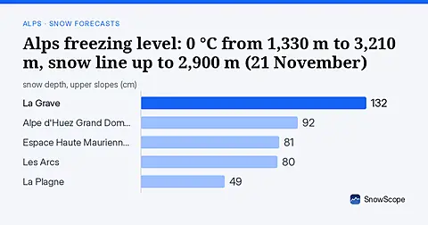

How much snow will La Grave get next week? 49 cm up high, 23–29 November 2026
Next week splits into two phases for La Grave. The first three days bring steady snow, then quiet days mid-week, then a fresh burst on Wednesday 25 November—the single best day for depth and quality. By Sunday 29, the top around 3400 m will hold 49 cm of new snow (a range of 23–74 cm), while lower slopes get far less.
See the live snow forecast for La Grave in the SnowScope appSnow depth, powder alerts and the 3D map, free.

When to plan your visit
If you can only pick one day next week, make it Wednesday 25 November. That morning, fresh snow will lie deepest on the Girose glacier under La Meije and in the north-facing couloirs below—the terrain guided skiers seek. Wednesday's forecast is 19 cm at the top, possibly up to 25 cm if the storm reaches its high end.
Sunday 29 is your backup option, bringing another 10 cm (up to 20 cm) but on steeper, more exposed terrain. The days between are drier, so Wednesday stands alone as the week's clear peak.
What you will find at each height
Three heights, three totals for 23–29 November: 49 cm near 3400 m (the top), 43 cm near 2500 m (mid-mountain), and 23 cm near 1500 m (the base by the village). The drop from top to base is sharp—only half as much snow reaches the lower runs.
This matters because La Grave's base sits low and can warm faster. Plan your morning runs in the high terrain if consistency matters. Lower slopes will thin sooner if the air temperature edges up.
The foundation you are building on
Before next week arrives, La Grave has already collected snow: the period from 17 to 20 November is forecast to bring 85 cm at the top (58–112 cm range) and 12 cm at the base. That deep upper layer is your cushion—you are not starting on bare rock.
By the time Wednesday 25 arrives, the top will be stable and established. The second batch of snow will then pile on a solid base, not a thin layer.
Nearby resorts: how they stack up
The storm reaches across the whole corner of the Alps evenly. For the same week (23–29 November) at the top of each resort: Les 2 Alpes gets 47 cm, Alpe d'Huez gets 40 cm, Serre Chevalier gets 47 cm, and La Grave itself gets 49 cm. The leader is La Grave by a small margin.
These differences are too close to decide where to ski. Choose based on terrain you know, the guide you trust, or which lifts suit your day. Snow totals across this region are almost equal.
The range of outcomes
A forecast a week out carries uncertainty. The top of La Grave could receive as little as 23 cm or as much as 74 cm. The middle value—49 cm—is the halfway mark, our best working number, not a promise.
If the storm phases shift a few hours or the cold air moves slower than expected, the snow total shifts with it. The 49 cm is a solid guide. The 74 cm would be excellent; the 23 cm would still be useful but leave thin patches.
A note on this terrain
La Grave has almost no groomed runs. The snow that falls here is for experts with a guide, rescue kit and avalanche awareness. Before you venture off the rare pistes, check the French avalanche bulletin (BERA) for the massif and the day's specific forecast.
The numbers show how much snow is coming. Opening dates and conditions are the resort's decision.
Tips for skiers
- Target Wednesday 25 November if you can. That morning combines the week's deepest fresh snow with the most stable base beneath it.
- Stay high: aim for the Girose glacier and north-facing slopes below La Meije where snow sits 49 cm deep. Lower runs and base terrain will be much thinner.
- Plan your descent before the day warms. The base near 1500 m gets only 23 cm—half of what the top receives. Early runs keep snow under your skis.
- Before leaving the pistes, consult the French avalanche bulletin (BERA) for the massif. The terrain here demands respect and an avalanche plan.
- Treat the 49 cm as your working total and 74 cm as a potential bonus. The range reflects genuine forecast uncertainty at this distance.
About these numbers
Resort snow depths are the deepest snow on the resort's upper slopes on the date shown; they are estimates for an area, not a measurement at one point. Forecasts can change. Always read the official avalanche bulletin before going off-piste.
Cite this report
For research, teaching or the press: the numbers and charts are free to reuse under CC BY 4.0 with this citation.
SnowScope (2026), How much snow will La Grave get next week? 49 cm up high, 23–29 November 2026, https://snowscope.app/blog/en/2026/11/la-grave-powder-forecast-next-week-23-29-november-2026.html, accessed 2026-11-16
SnowScope (Atlas Labs). (2026, November 16). How much snow will La Grave get next week? 49 cm up high, 23–29 November 2026. SnowScope snow reports. https://snowscope.app/blog/en/2026/11/la-grave-powder-forecast-next-week-23-29-november-2026.html
BibTeX
@misc{snowscope2026lagravepowderforecastnex,
author = {{SnowScope (Atlas Labs)}},
title = {How much snow will La Grave get next week? 49 cm up high, 23–29 November 2026},
year = {2026},
month = nov,
howpublished = {\url{https://snowscope.app/blog/en/2026/11/la-grave-powder-forecast-next-week-23-29-november-2026.html}},
note = {Published 2026-11-16 11:25 UTC; accessed 2026-11-16}
}· CC BY 4.0 · Methods, data and tools →
La Grave: snow and temperature by height, this winter vs last (tools) →
Follow La Grave
Free: a message when fresh snow is coming, and the forecast every morning.
More snow reports

50 cm on the upper slopes: that is why La Grave heads our list. We combined today's snow depth, the new snow of the last 72 hours and the forecast to …

The 0 °C level in the Alps, next days: 1,330 m to 3,210 m. Warmest hours: snow line about 300 m lower, up to 2,900 m at La Grave on Sunday 22 …

The early-winter snowpack in the Alps is building unevenly, and height makes all the difference. Today the deepest snow in the Alps is at La Grave …